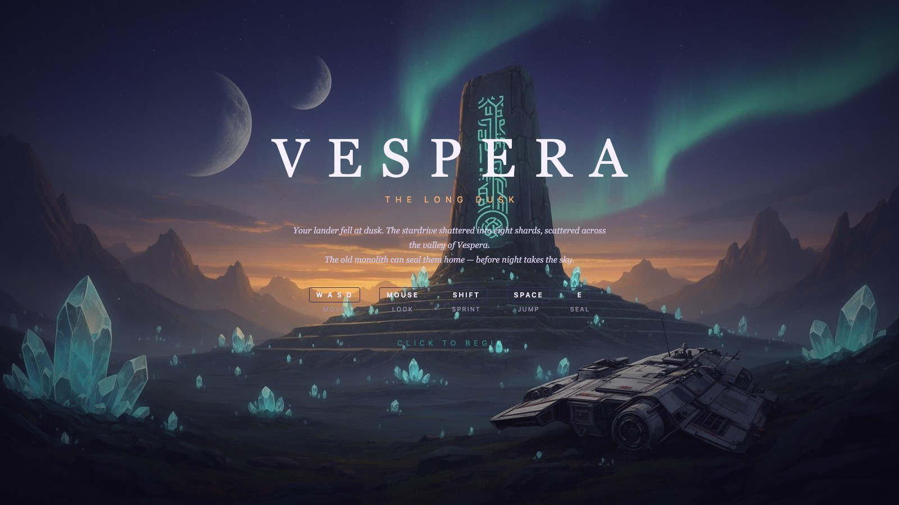

Same prompt, same effort level, same output cap, same machine. GLM-5.3 got the identical brief that Claude Fable 5.1 got, and built something completely different: an exploration game instead of a shooter. 27 minutes, first try.

The title screen. The key art behind it was generated during the run.
▶ Play VESPERA13.9 MB, one file, everything embedded. WASD move · mouse look · Shift sprint · Space jump · E seal. Sound is on — press M to mute. Give it a moment on first load, the 3D scene is 7 MB of geometry.
| Fable 5.1 · GLM-5.3 | |
| Wall clock | 24.2 min · 27.3 min |
| Turns | 75 · 146 |
| Cost | $9.90 · $9.39 |
| Output tokens | 95,832 · 106,966 |
| Rounds to green | 1 · 1 |
| Single file size | 4.4 MB · 13.9 MB |
Both ran at effort high with a 64,000 output-token cap,
against the same gate, on the same RTX 5090.
VESPERA · The Long Dusk. Your lander went down at dusk and the stardrive shattered into eight shards across the valley. Collect them and seal them at the monolith before night takes the sky — an eight-minute eclipse timer runs the whole game.
Both models hit the same trap, and both caught it themselves: the generated music had silence in it. GLM threw away seeds 2201 and 2202, Fable threw away six tracks out of seven. Both found it the same way — by rendering spectrograms and looking at them.
GLM logged one lesson Fable never ran into: call
/free on ComfyUI between jobs, or the second load runs out of VRAM
at 28.2 GiB.
It verified the finished game the same way too — Playwright driving real Chrome, an autoplay run that collects all 8 shards and reaches the win state, zero console errors.
Build a playable 3D game. One self-contained HTML file, game.html, in the current working directory. Genre and theme are your choice — pick what you can push furthest. I want quality, not a tech demo. You have a render workstation. Use it to make the game look like something nobody built in an afternoon: - Blender is installed. Model the 3D assets there — props, characters, environment pieces, whatever your game needs — and export them for the web. Script it, do not click through a UI. - ComfyUI at http://127.0.0.1:8188, raw API. Generate the textures, skybox and any 2D art there. Generate at least one short video clip and place it inside the game world where it belongs — a screen, a projection, a hologram. - Music that fits the world, generated there too, playing in the game. ...
Full text: prompt.txt — byte-identical to the one Fable 5.1 got.